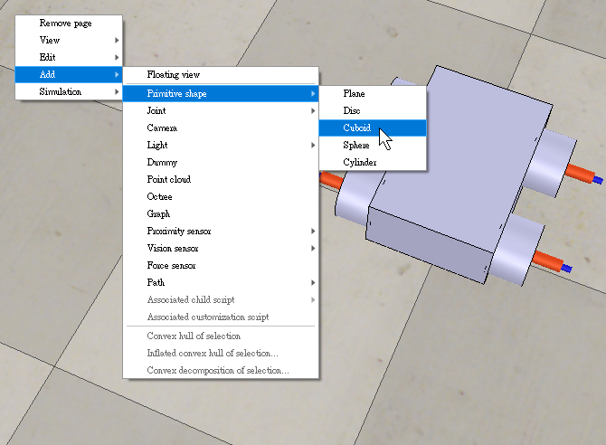
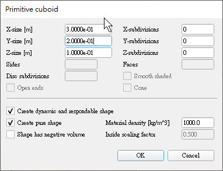
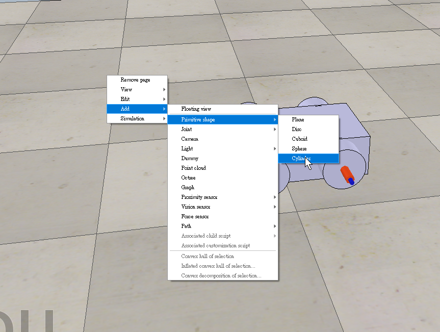
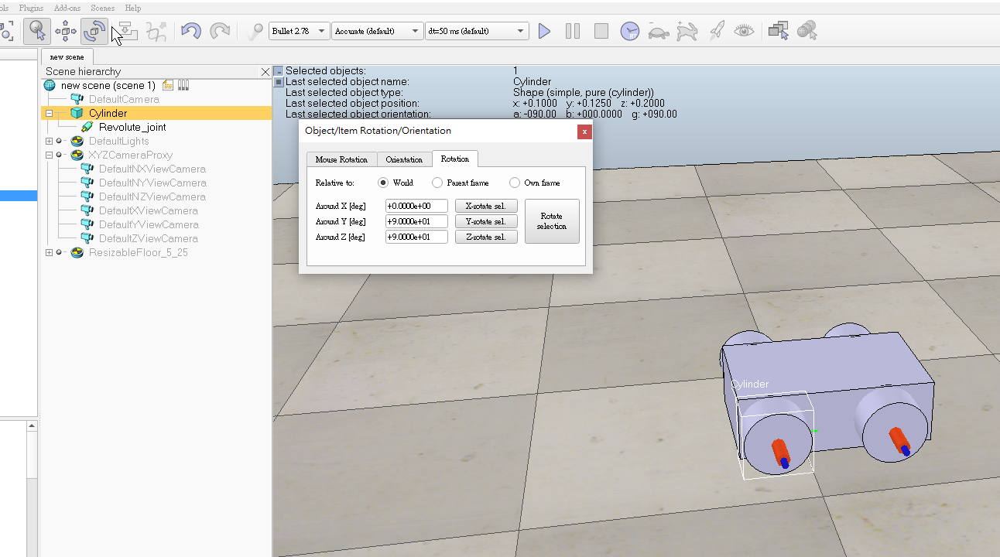

week1~5 <<
Previous Next >> week10~14
week6~9

1.OBS連接，為往後可能線上課程做準備。
2.設定往後影片頭像
OBS下載網址:https://obsproject.com/download
範例影片:
四輪車的基本外型設置及模擬
※作業一
根據主題0和主題1的資料來了解完成四輪機器人需要做到那些步驟
以下為vrep環境下的操作
1.首先先製作車身本體以及車子大小

調整完後把車身調高比較方便插入插入稍後需加入的輪子和傳動軸
2.加入輪子和傳動軸
須將這兩個物件的y.z軸選轉90度，已安裝至車身


3.馬達調整功率
藉由勾選motor properties以啟動馬達，並可以藉由調整轉動速度和力矩達到所想要馬達轉動之效果，底下的lock motor when target velocity is zero則可以使馬達速度為零時鎖定住馬達

4.檢查碰撞
物件的動力學設定也必須要設定好，如下方所示物體的碰撞和物體的動態都必須打開，才能使剛剛設定好的馬達進行對輪胎的帶動

以上操做都沒問題即可成功向前移動。
以下為操作影片:
第一組第二次直播會議
.第一組 第二次會議 (WEEK2)
1.成員簽到等候
2.分工作業進度回報及問題討論
3.有問題的同學提出問題
成員名單
1.40723201 (簽) 已建立完成網站
2.40723206 (簽) 已建立完成網站 小組長
3.40723213 (簽) 已建立完成網站
4.40723216 (簽) 已建立完成網站
5.40723223 (簽) 已建立完成網站
6.40723226 (簽) 已建立完成網站
7.40723229 (簽) 已建立完成網站 小組長
8.40723230 () 已建立完成網站
9.40723241 (簽) 已建立完成網站
10.40723242 (簽) 已建立完成網站 小組長
11.40723246 (group leader) (簽)
12.40732319 ()
分工作業進度回報及問題討論
※作業一(4輪車)
*根據主題 0 和主題 1 的素材，您能否具體描述機械設計團隊，為了完成作業四輪機器人需要做些什麼?
※作業二(設計協同)
* 根據主題 Topic 0們可以創建英語英語詞彙收集服務嗎？
*根據主題 Topic 1 我們可以構建在線工具來促進這些過程嗎？
*Topic 0: From Digital to Industrial + Engineering Product Design Collaboration (從數字到工業+工程產品設計協作)
設計資料:DigitalProductCollaboration.pdf、IndustrialAndEngineeringProductDesignCollaboration.pdf
Can we create an english-english vocabulary collection service?
相關網站:https://www.autoitscript.com/forum/files/file/419-dictionary_bigdb/
*Topic 1: Mechanical Design Process (機械設計過程)
Login to your gm email account and download MechanicalDesignProcess.pdf.
以上由40723206分配工作
下列為分工表格

1.各組員下載OBS，以往後會議討論用
- 作業二必須在 4/23 前完成，並上傳 pdf 檔到個人倉儲的 download 上。 不會做的可以問會的同學或在 gitter 上發問。
- 請依每個人的作業二pdf檔、網站內容，進行互評。
week1~5 <<
Previous Next >> week10~14